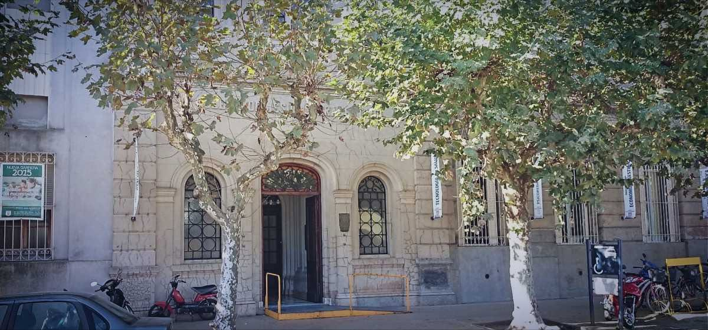
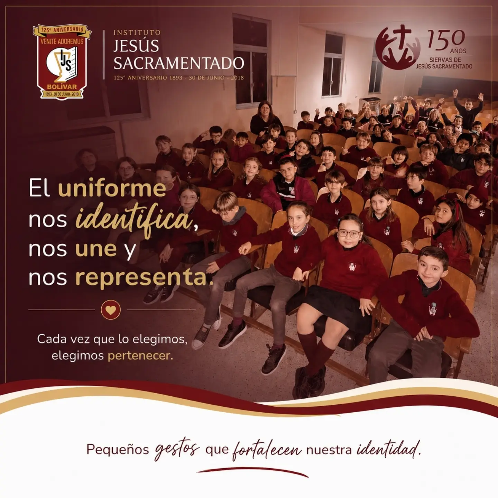
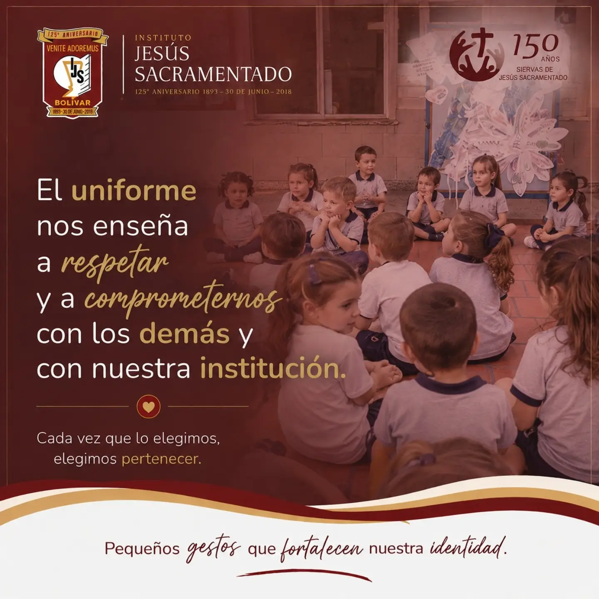
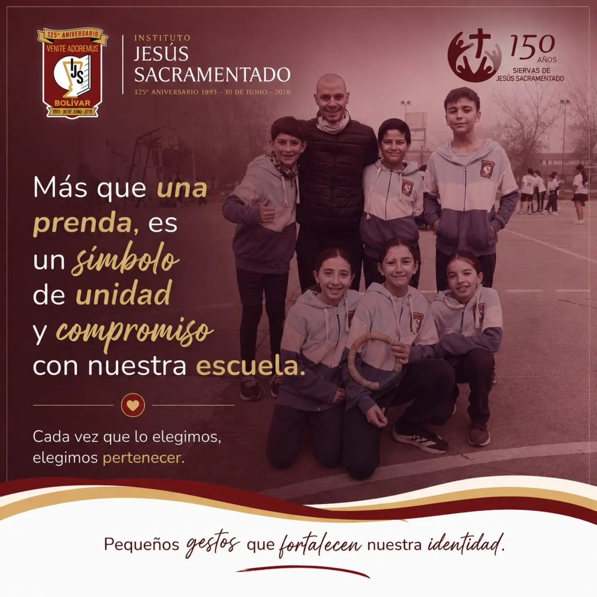
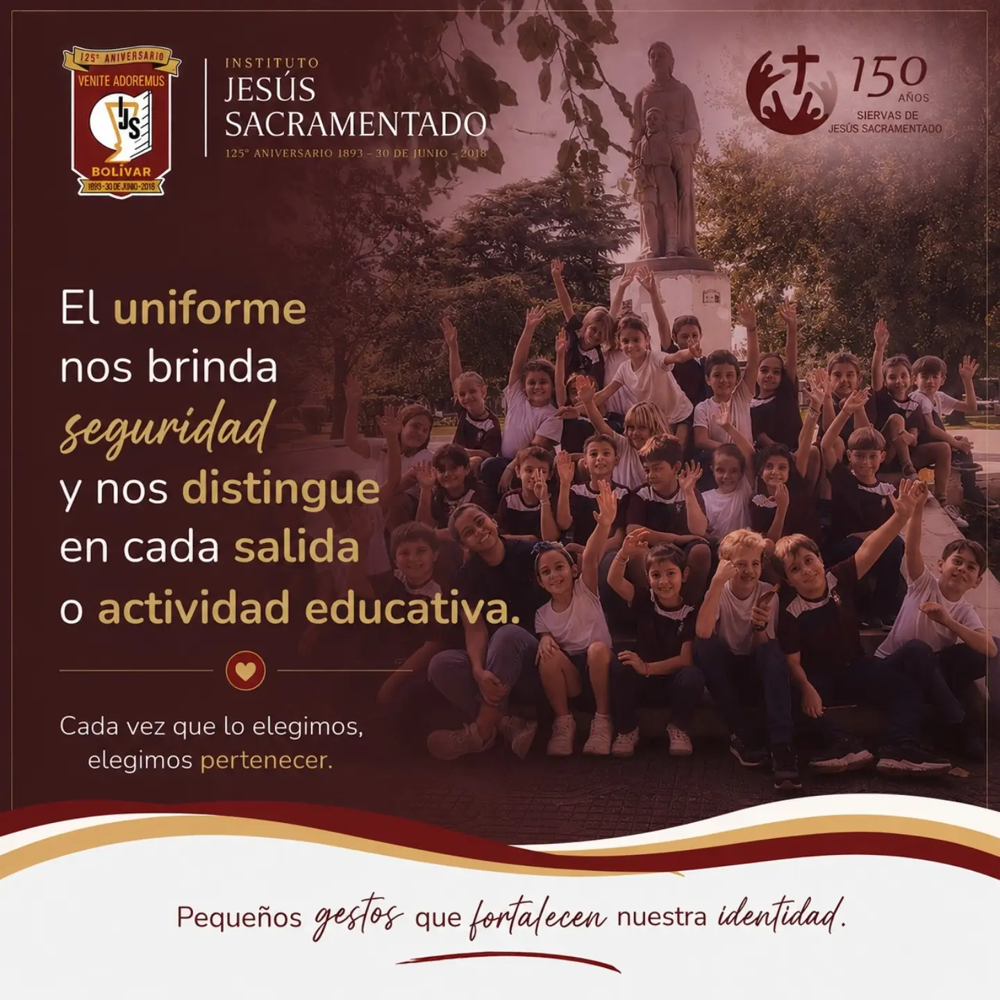
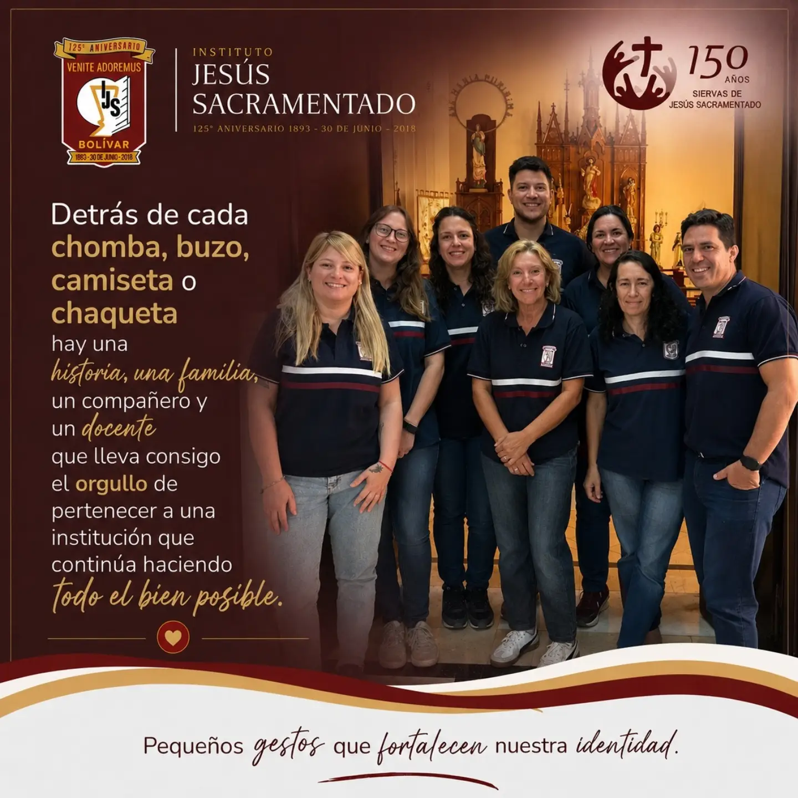
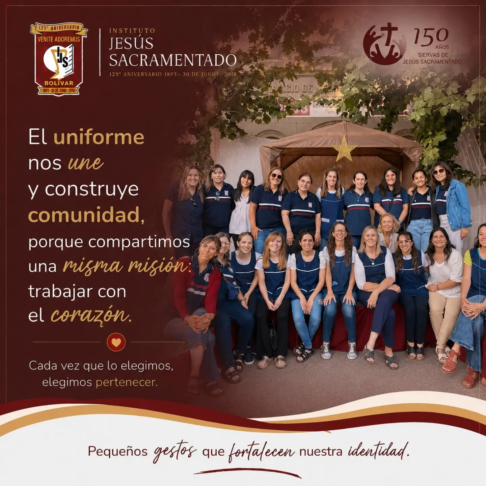

Primaria, secundaria y carreras terciarias en una misma institución. Formamos personas durante toda su etapa de estudio, con el mismo proyecto pedagógico de principio a fin.

Jornada simple y extendida. Primeras letras, pensamiento lógico-matemático, inglés desde 1er grado y talleres de arte y educación física.
6 a 12 años · Turno mañana y tardeOrientación en Economía y Administración, con laboratorio de informática, proyectos de investigación y preparación para el ingreso a la universidad.
13 a 18 años · Turno mañanaProfesorados y tecnicaturas con título oficial, cursada presencial de 2 a 3 años y salida laboral concreta desde el primer año.
Ingreso libre · Turno tarde y noche





Más de 40 años de historia en la ciudad, con generaciones de una misma familia pasando por nuestras aulas.
Equipo docente estable, muchos con más de 15 años en la institución y formación continua todos los años.
Laboratorio de ciencias, sala de informática, biblioteca y patio cubierto para actividad física todo el año.
Actos, muestras anuales, viaje de egresados y actividades solidarias que suman toda la comunidad educativa.
"Mis tres hijos hicieron toda la primaria y la secundaria acá. El seguimiento de los docentes es distinto, se nota que conocen a cada chico."
"Empecé el profesorado sin saber bien si iba a poder con los horarios de trabajo, y el turno noche me lo hizo posible."
"Pasé de la secundaria acá directo a la tecnicatura, sin cambiar de institución. Ya conocía a los profesores y el lugar."
Elegí el nivel que te interesa y te escribimos por WhatsApp con la información y los pasos a seguir.
Av San Martin 583, San Carlos de Bolívar
Lunes a viernes de 8 a 17hs
superior.ijsbolivar@gmail.com
secundariaijs@gmail.com